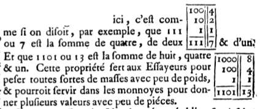
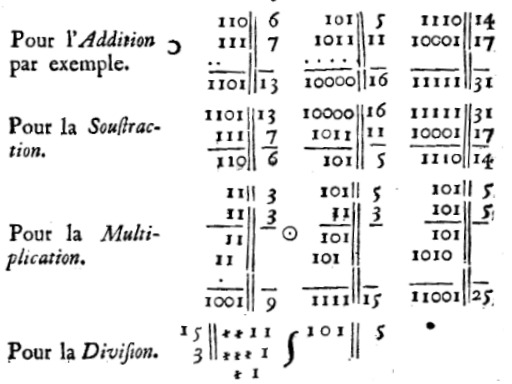

Un "bit" (chiffre binaire) est considéré comme égal à
En écrivant "1" pour chaque pion et "0" pour chaque case vide, on obtient l'écriture binaire du nombre. Par exemple, 42 s'écrit 101010 parce qu'il y a trois pions pour représenter ce nombre sur l'échiquier de Neper (en positions respectives 32, 8 et 2). Neper n'a jamais semble-t-il pensé à écrire ainsi les nombres.
Mais environ un siècle plus tard, Geoffroy Guillaume Leibniz propose le calcul binaire, et c'est d'ailleurs de lui que vient l'idée de représenter les chiffres binaires par des poids :
Comment Leibniz propose de représenter les nombres binairesCette propriété sert aux essayeurs pour peser toutes sortes
de masses avec peu de poids, et pourrait servir dans les
monnaies pour donner plusieurs valeurs avec peu de pièces.
Contrairement à Neper, Leibniz ne calculait pas à l'aide d'un abaque (il avait lui-même construit une machine à multiplier) mais posait les calculs par écrit :
Remarquer le décalage dans la multiplicationOn constate que pour la multiplication, les calculs ne sont pas posés en carré comme dans l'abaque de Neper, mais que le carré a été déformé en parallélogramme, avec écritures décalées comme dans les multiplications effectuées à l'école primaire.
Pour faire de l'arithmétique modulo une puissance de deux, il suffit d'enlever les pions le plus à gauche (par exemple, modulo 8, on ne garde que les pions des 3 dernières colonnes parce que 8=23). Mais pour faire de l'arithmétique modulo 1 de moins qu'une puissance de 2 (par exemple 7), c'est assez facile aussi: On reporte les pions à droite, comme si la colonne 4 était en réalité la colonne 1. C'est ce qui a permis à Édouard Lucas, vers la fin du XIXe siècle, de faire des calculs modulo des nombres de Mersenne, et c'est avec un abaque de Neper qu'il a détenu pendant plusieurs décennies le record du monde du nombre premier le plus grand (de 1876 à 1952)